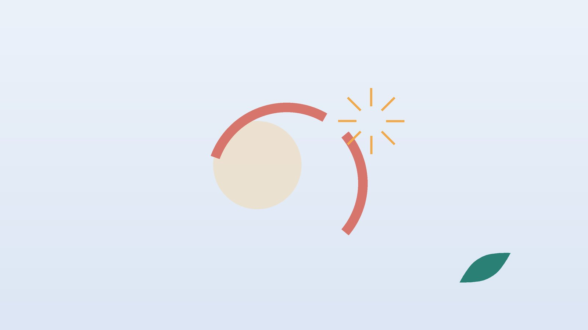

건강 칼럼 · 목·어깨·팔 통증 · 인천 회전근개 파열 한의원
팔을 들 때 어깨가 아프고 힘이 빠진다면, 회전근개 파열 확인과 한방 관리

내 어깨, 회전근개 문제일까요?
- 팔을 옆으로 들어 올릴 때 어깨 높이 근처에서 찌릿하게 아프다
- 선반 위 물건을 내리거나 머리를 감을 때 팔에 힘이 안 들어간다
- 아픈 쪽으로 누우면 욱신거려 잠에서 깬다
- 남이 팔을 들어 주면 올라가는데 내 힘으로는 끝까지 못 올린다
- 팔을 내릴 때 툭 떨어지듯 버티지 못한다
- 어깨를 돌리면 안에서 사각거리는 소리가 난다
이 체크리스트는 진단 도구가 아닙니다. 남이 들어 주면 올라가는데 스스로는 못 드는 경우는 힘줄이 끊어졌을 가능성이 있어 영상 검사가 필요합니다.
회전근개는 왜 찢어지고, 다른 어깨 병과 어떻게 다른가요?
회전근개는 극상근, 극하근, 소원근, 견갑하근의 힘줄로 이루어지며, 그중 어깨 위쪽을 지나는 극상근 힘줄이 가장 자주 손상됩니다. 나이 들며 조금씩 닳는 퇴행성 파열이 많고, 넘어지며 팔을 짚거나 갑자기 무거운 것을 들다 생기는 외상성 파열도 있습니다. 통증 없는 60대 이상에서도 영상상 파열이 흔히 보인다는 보고가 있어, 영상과 증상을 함께 봅니다.
- 부분 파열: 힘줄 두께의 일부만 찢어진 상태입니다. 통증은 심해도 드는 힘은 대체로 남아 있습니다.
- 전층 파열: 힘줄이 위아래로 완전히 뚫린 상태입니다. 크면 스스로 팔을 들기 어렵고 시간이 지나며 근육이 위축될 수 있습니다.
- 충돌증후군과의 차이: 힘줄이 뼈 아래에서 끼여 아픈 것으로 힘은 대개 정상이며, 오래 끼이면 파열로 이어지기도 합니다.
- 오십견과의 차이: 관절막이 굳어 남이 들어 줘도 팔이 올라가지 않는 점이 다릅니다.
정형외과 영상 검사와 수술 상담이 먼저인 경우
- 넘어지거나 무거운 것을 든 뒤 '뚝' 하며 갑자기 팔을 못 들게 되었다
- 젊은 나이이거나 운동·육체노동을 계속해야 하는데 외상으로 찢어졌다
- 몇 주 사이 팔 힘이 눈에 띄게 줄고 어깨 뒤쪽 근육이 홀쭉해졌다
- 어깨가 붉게 붓고 열이 난다
- 왼쪽 어깨 통증과 함께 가슴이 조이고 식은땀이 난다 (즉시 119)
외상성 큰 전층 파열은 시간이 지나면 힘줄이 말려 들어가 봉합이 어려워질 수 있어 정형외과에서 MRI와 수술 여부를 빨리 판단받으세요.
한의학은 회전근개 파열을 어떻게 보나요?
한의학은 어깨와 팔이 아파 들지 못하는 병을 견비통(肩臂痛), 힘줄이 상한 것을 근상(筋傷)으로 다룹니다. 『황제내경 소문』 비론편은 풍·한·습 세 기운이 섞여 들어와 비증(痺證)이 된다고 했는데, 찬 바람에 어깨가 더 쑤시는 경험이 여기에 가깝습니다.
힘줄은 간(肝)이 주관하는 근(筋)에 속해 혈(血)의 영양을 받는다고 보았기에, 나이 들어 힘줄이 닳는 것을 간혈이 근을 기르지 못하는 상태로 해석합니다. 막힌 흐름을 푸는 치료와 힘줄의 바탕을 보하는 치료를 나누어 생각합니다.
나의 어깨 통증은 어떤 유형일까?
영상 검사로 파열 정도를 확인한 뒤에 함께 쓰는 한의학적 구분입니다.
1. 어혈(瘀血) 다친 뒤 찌르는 유형
- 이런 분에게 많아요
- 넘어지거나 무리하게 들다 다친 분
- 나타나는 모습
- 한 자리가 찌르듯 아프고 밤에 더 욱신거린다
- 함께 오는 몸의 신호
- 눌렀을 때 뚜렷한 압통, 멍이 들었던 흔적
- 진찰에서 보이는 모습
- 혀가 어둡고 맥이 깔깔함
- 치료 방향
- 뭉친 혈을 풀어 통증을 가라앉히는 방향 (신통축어탕 계열)
- 오늘부터 해 볼 것
- 다친 지 이틀 안에는 얼음찜질을 15분씩 해 주세요.
2. 풍한습(風寒濕) 시리고 무거운 유형
- 이런 분에게 많아요
- 에어컨 바람을 자주 쐬거나 찬물 작업을 하는 분
- 나타나는 모습
- 흐리거나 추운 날 어깨가 무겁고 뻐근하다
- 함께 오는 몸의 신호
- 몸이 무거움, 따뜻하면 덜함
- 진찰에서 보이는 모습
- 혀에 하얀 태가 끼고 맥이 느림
- 치료 방향
- 찬 기운과 습을 걷어 경락을 데우는 방향 (견통탕·오적산 계열)
- 오늘부터 해 볼 것
- 잘 때 어깨가 이불 밖으로 나오지 않게 덮어 주세요.
3. 간신휴손(肝腎虧損) 닳아서 약해진 유형
- 이런 분에게 많아요
- 60대 이후, 오래 어깨를 써 온 분
- 나타나는 모습
- 통증은 은근하지만 팔 힘이 서서히 줄어든다
- 함께 오는 몸의 신호
- 허리·무릎이 함께 시큰함, 쉽게 피로함
- 진찰에서 보이는 모습
- 맥이 가늘고 힘이 없음
- 치료 방향
- 간신을 보해 힘줄의 바탕을 기르는 방향 (독활기생탕 계열)
- 오늘부터 해 볼 것
- 팔을 몸통에 붙인 채 고무줄로 바깥 돌리기를 가볍게 시작해 보세요.
한의원에서는 어떻게 진찰하나요?
- 다친 경위와 경과: 언제, 어떤 동작에서 아팠는지와 외상, 주사·수술 이력을 여쭙니다.
- 능동·수동 운동 비교: 스스로 드는 범위와 들어 줄 때의 범위를 비교해 오십견과 구분합니다.
- 힘줄별 근력 검사: 팔을 비스듬히 들고 버티기, 팔꿈치를 붙이고 바깥으로 돌리기로 약한 힘줄을 찾습니다.
- 초음파: 힘줄이 얇아지거나 끊긴 자리, 점액낭 붓기를 보고, 큰 전층 파열이 의심되면 MRI를 권합니다.
침·약침·추나·한약 치료는 어떻게 하나요?
1. 침 치료
- 견우(肩髃): 팔을 옆으로 들었을 때 어깨 끝 앞쪽에 생기는 오목한 곳입니다.
- 견료(肩髎): 같은 자세에서 어깨 끝 뒤쪽에 생기는 오목한 곳입니다.
- 천종(天宗): 날개뼈 한가운데 오목한 자리로, 극하근 긴장을 풀 때 씁니다.
- 조구(條口): 정강이 바깥쪽 한가운데 높이의 혈로, 멀리서 어깨 움직임을 도울 때 함께 씁니다.
침을 둔 채 아프지 않은 범위에서 팔을 천천히 움직이게 하기도 하고, 굳은 근육에는 온열 요법을 더합니다.
2. 약침·초음파 가이드 약침과 추나 요법
약침은 일반 약침과 초음파 가이드 약침을 모두 시행하며, 아픈 부위의 깊이와 주변 구조에 따라 진찰 후 골라 씁니다. 초음파 가이드 약침은 초음파 화면으로 바늘 끝을 확인하면서 놓는 방식입니다. 초음파로 극상근 힘줄이 찢어진 위치와 크기, 그 위 점액낭에 물이 찼는지를 확인하고 힘줄 주변의 염증 자리에 바늘 끝이 닿도록 놓습니다. 날개뼈와 등, 목의 굳은 관절이 어깨 부담을 키우는 경우 진찰 후 추나 요법을 시행하며, 갓 다친 어깨는 무리하게 돌리는 교정을 하지 않습니다.
3. 한약
유형에 따라 다친 직후에는 어혈을 풀고, 회복기에는 힘줄을 기르는 쪽으로 탕약을 처방합니다. 진통제나 혈압약 등 복용 중인 약은 알려 주시면 확인해 처방합니다. 임신 중이거나 간 질환 병력, 위장 장애가 있다면 진료 때 꼭 알려 주세요. 확인 후 안전한 약재로 처방합니다. 한약은 원장이 원내 탕전실에서 약재 선별부터 달이는 과정까지 직접 관리하며, 10일분씩 처방해 복용 경과를 보고 약재 구성과 양을 조절합니다. 아픈 자리는 초음파 가이드 약침과 추나로 다스리고, 통증이 오래가게 만드는 몸속의 기혈 순환과 장부 기능은 체질에 맞춘 한약으로 함께 살피면 통증 완화와 재발 관리를 함께 도모할 수 있습니다.
원장님이 네이버 블로그에 진료 이야기와 건강 정보를 꾸준히 올리고 있습니다. 더 많은 이야기는 블로그에서 확인해 보세요.
블로그 보기관리는 어떤 순서로 진행되나요?
- 파열 확인 진찰과 초음파로 부분·전층 여부를 보고, 수술 판단이 필요하면 정형외과를 먼저 안내합니다.
- 통증 조절기 침과 약침으로 밤 통증과 염증을 가라앉힙니다.
- 움직임 회복기 추나와 가벼운 운동으로 날개뼈와 어깨 움직임을 되찾습니다.
- 근력 강화기 주변 근육을 키워 재발을 줄이고 근력 변화를 비교합니다.
기간과 횟수는 증상이 얼마나 오래되었는지, 동반 증상이 무엇인지에 따라 달라지며, 진찰 후 개인별로 안내합니다.
어깨 힘줄을 지키는 생활 관리
- 머리 위 동작 줄이기: 선반 물건은 발판을 딛고 내리세요.
- 옆으로 누울 때: 아프지 않은 쪽으로 눕고, 아픈 팔 아래 베개를 받쳐 어깨가 앞으로 쏠리지 않게 합니다.
- 시계추 운동: 허리를 숙여 아픈 팔을 늘어뜨리고 작은 원을 그리며 30초씩 흔들어 줍니다.
- 날개뼈 모으기: 양쪽 날개뼈를 등 가운데로 모아 5초 버티기를 10번 합니다.
- 짐 들기: 장바구니는 양손에 나눠 들고 팔을 몸에 붙여 듭니다.
다른 진료가 함께 필요한 경우
- 외상 뒤 팔을 들지 못하면 정형외과에서 MRI로 파열 크기를 확인하고 수술 여부를 상의하세요.
- 손가락까지 저리면 목 디스크가 함께 있는지 확인하세요.
- 당뇨가 있으면 어깨가 굳기 쉬워 혈당 관리를 함께 해 주세요. 당뇨약은 담당 의사와 상의 없이 끊지 마세요.
- 주사 치료를 받았다면 날짜와 횟수를 알려 주세요.
자주 묻는 질문 Q&A
- Q1. 회전근개가 찢어졌는데 꼭 수술해야 하나요?
- 부분 파열이나 나이 들어 생긴 퇴행성 파열은 비수술 치료를 먼저 하는 경우가 많고, 외상성 큰 파열은 수술 판단이 먼저입니다.
- Q2. 찢어진 힘줄이 저절로 붙나요?
- 끊어진 힘줄이 다시 붙기는 어렵지만, 통증과 기능은 주변 근육을 키우며 좋아질 수 있습니다.
- Q3. 오십견인지 회전근개 파열인지 어떻게 아나요?
- 남이 들어 줘도 안 올라가면 오십견, 들어 주면 올라가는데 스스로 못 들면 파열 쪽을 먼저 생각합니다.
- Q4. 밤에 어깨가 더 아픈 이유는 무엇인가요?
- 누우면 어깨가 눌리고 염증 부위가 자극받아 욱신거림이 커지기 쉽습니다.
- Q5. 운동을 해도 되나요?
- 아프지 않은 범위의 가벼운 운동은 괜찮고, 아령 운동은 진찰 뒤에 시작하세요.
- Q6. 수술 후 재활 중에도 한방 치료가 되나요?
- 가능합니다. 병원 재활 일정에 맞춰 통증과 굳은 근육을 관리합니다.
- Q7. 교통사고로 어깨를 다쳤는데 자동차보험 진료가 되나요?
- 가능합니다. 팔을 못 든다면 영상 검사도 함께 받으세요.
- Q8. 어깨 통증에 집에서 지압할 곳이 있나요?
- 날개뼈 한가운데 천종혈을 반대쪽 손이나 공으로 지그시 눌러 보세요.
문원열 대표원장한의사 · 365스마일한의원
임상 경력 15년, 인천 서구 가정동에서 개원 후 10년째 진료하고 있으며, FCST 턱관절학회·연부조직학회·침도학회 등에서 활동합니다. 아픈 곳만이 아니라 증상의 원인을 찾아 진료합니다.
진료 안내
- 진료시간
- 평일 09:00~20:00 (점심시간 13:00~14:00, 접수 마감 19:30)
토·일·공휴일 09:00~15:00 (접수 마감 14:30) - 주소
- 인천광역시 서구 가경주로 46, 2층 (가정동)
인천2호선 가정중앙시장역 인근
영상으로 길 안내 보기 → - 주차
- 한의원 건물 바로 앞 1층 도원주차장
- 예약
- 예약 바로가기 또는 전화 예약
진료시간은 사정에 따라 바뀔 수 있으니 방문 전 전화로 확인해 주세요.
함께 읽으면 좋은 칼럼
건강 칼럼 전체 보기 →


참고 자료
- Tempelhof S, Rupp S, Seil R. Age-related prevalence of rotator cuff tears in asymptomatic shoulders. J Shoulder Elbow Surg, 1999
- 『황제내경 소문(素問)』 비론(痺論)
- 질병관리청 국가건강정보포털 — 원문
※ 이 글은 일반적인 건강 정보이며, 개인의 상태에 따라 치료 방법과 결과는 다를 수 있습니다. 정확한 진단과 치료는 진료를 통해 결정됩니다. 침·약침 시술 후 드물게 멍, 통증 등이 생길 수 있습니다.